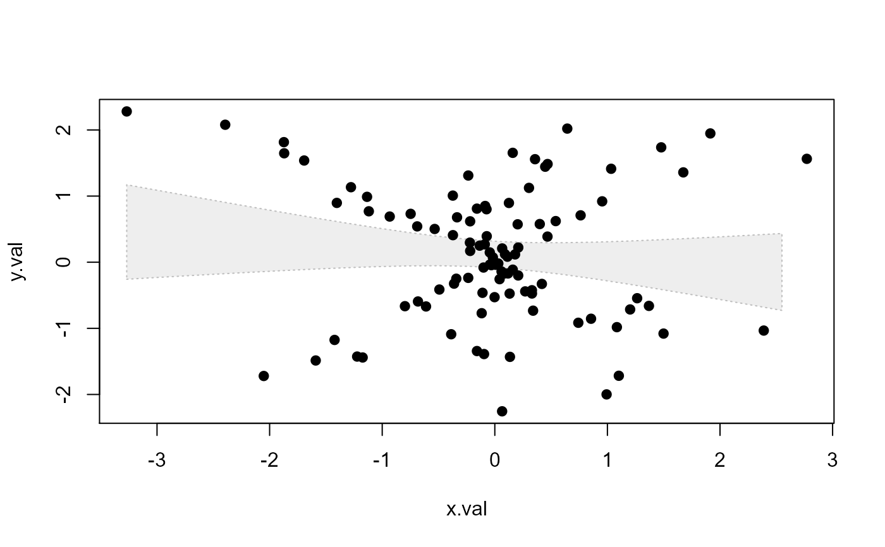

Base plotting helper function to draw a shaded polygon
shaded.range(x, y.L, y.U, bg, col = bg, lty = 3, col.adj = 0.25, lwd = 1)x-value
lower y-value
upper y-value
background shading
line color
line type
factor modifying the opacity alpha. See alpha.f in adjustcolor()
lines width around polygon
draws polygon based on x, y (upper and lower) values
see polygon() function
set.seed(456)
y.val=rnorm(100)
x.val=y.val*rnorm(100)
mod=lm(y.val~x.val)
x.pred=seq(min(x.val),max(x.val),max(x.val)/10)
mod.pred=predict(mod, newdata=data.frame(x.val=x.pred),interval="confidence")
plot(y.val~x.val,type="n")
shaded.range(x.pred,mod.pred[,2],mod.pred[,3],"grey")
points(x.val,y.val,pch=19)
